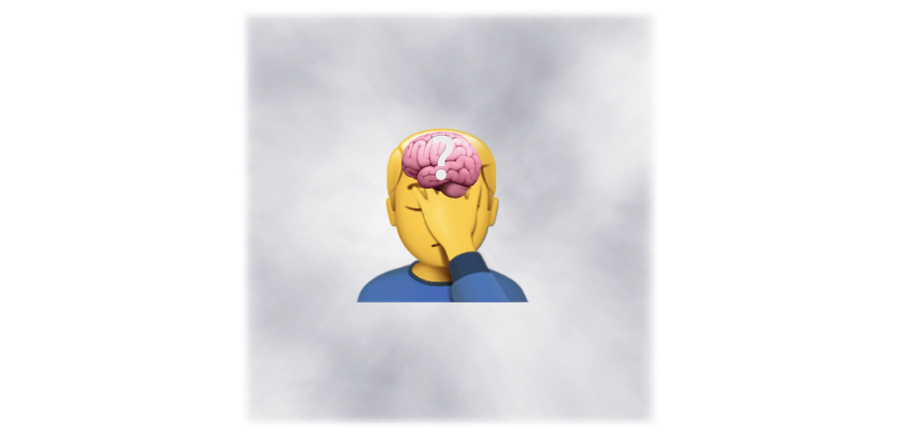
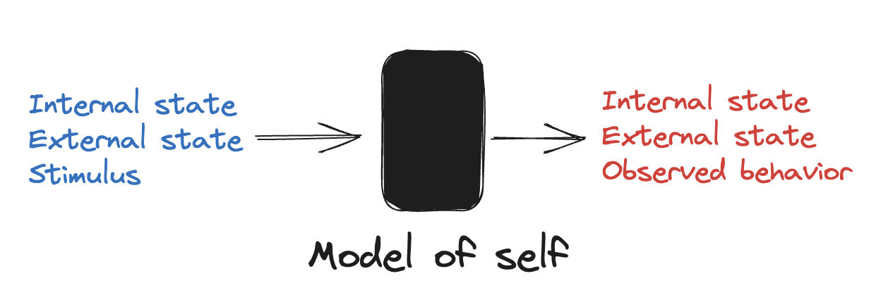
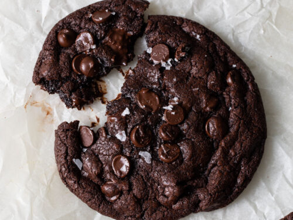
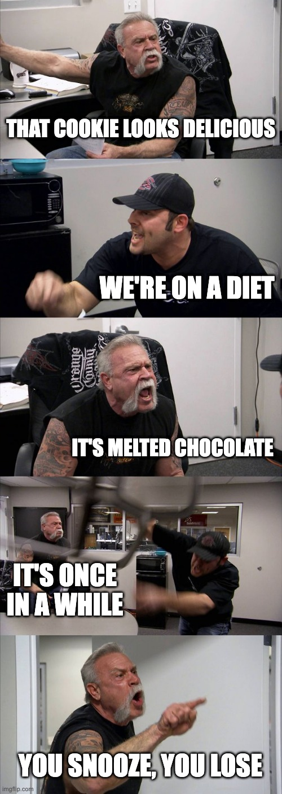
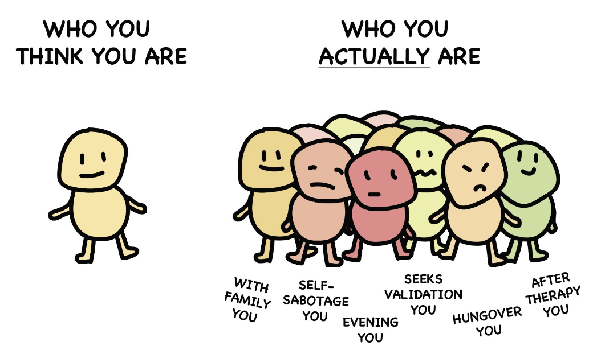
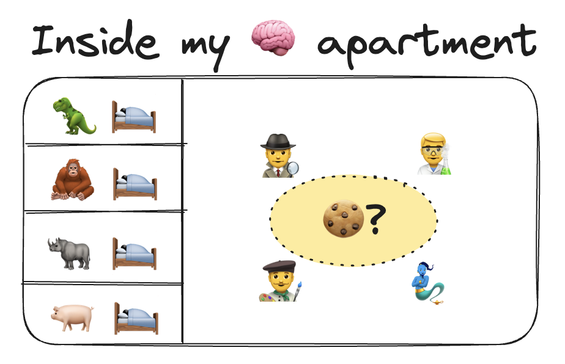

Roommates of Selves
By the end of reading this blog post, you will understand why you did your most regretful deeds.

Previously, I presented the idea of model of self in Empirical Method for Self Nurture. It described an objective way to observe ourselves.

But it’s a black box. What’s inside? For small decisions, it feels like having a small conversation between two people. For big decisions, it feels like I’m in a meeting. But who are these people inside me? Where did they come from? What do they want?
For a model to be useful, it needs to be able to predict a result given the inputs. When I reflect on my past and think about why I did what I did, I tell a story of what happened. If I ate a cookie that I shouldn’t have, it may be this story:
I went to the cafe to get some work done and got a black coffee (no sugar). I picked a seat looking out the window away from the pastry display. After getting some important work done, I was a little bit tired. I then noticed a tasty smell of fresh cookies. Someone sat down beside me with a cookie.

A fresh double chocolate chip cookie. It smells really nice.It wasn’t going to stay fresh for much longer. I know that if I eat cookies now, I might feel gulity later because I’m on a diet. But this is a once in a while opportunity to experience warm melted chocolate. What’s life without pleasure?
But the decision arose from an internal conflict between competing interests. What’s an easy way to distinguish between those competing interests? To personify them. It’s much easier to conceptualize the above story as an argument:

Over repeated instances of internal conflict, the same characters with the same interests argue repeatedly over a wide range of situations. It seems that they represent parts of ourselves whether we like it or not.
 |
|---|
| Source: Self Destructive Behavior |
An evolutionary psychology perspective makes perfect sense of why this is the case. Our brains are comprised of layers like sedimentary rock. Layers such as fish, reptile, primate, and human. See Supernormal Stimuli. For more, watch How We Became Humans.
Inside our minds are primal roommates that we can’t evict.
Sometimes these roommates take us on wild trips that make life fun, and that’s great. But more often than we’d like, they are responsible for holding back progress that requires coordination from all our inner selves. Whenever we sacrifice sleep, or eat too much pizza to fall into a carb coma, we’re making net-loss trades for temporary bursts of pleasure.

As I’m writing at the cafe, I smell delicious pastries. Yet, I am not inclined to eat snacks even if I didn’t have anything else to eat for several hours. That’s because my pig-self is sleeping. It sleeps when my ghrelin levels are low. It’s low because I ate a high-fiber, high-fat meal this morning. Had I eaten a bagel for breakfast, my blood sugar level would have spiked and crashed, triggering my pig-self to oink in revolt.
Seeing myself as a linear combination of individual voices allows me to limit the scope of my nurture experiments to one roommate at a time. Self configuration is now a matter of asking one roommate at a time if they’re awake and how they’re feeling. Seeing others as such helps me empathize by invoking which parts of themselves are dominant at the time.
What are your regretful moments? Which part of you was in charge at the time? What’s their name? When do they go to sleep? If a similar situation came up again, how would you prepare yourself?